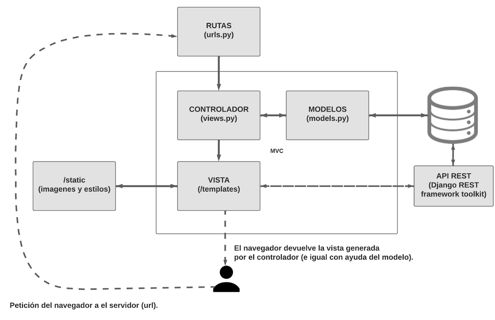

Task Ninja
2023Un proyecto que nace de la necesidad de organizar las tareas de una forma más eficiente y que se adapte a las necesidades de cada persona y cada tarea.
#Django, #Python, #HTML, #CSS, #JavaScript, #FigmaIntroducción al contexto del proyecto.
Organizar las tareas personales y profesionales puede ser un desafío diario para muchas personas. Con tantas responsabilidades y compromisos, es fácil perderse en la lista interminable de tareas pendientes. Además, puede ser difícil mantener un equilibrio entre la vida personal y profesional y entre las tareas que “queremos hacer” y las que “debemos hacer” pero nos resultan menos agradables, teniendo que priorizar.
La tecnología ayuda a las personas a organizar sus tareas y simplificar su vida diaria al ofrecer una amplia variedad de herramientas y aplicaciones diseñadas para hacer esta tarea más fácil. Desde aplicaciones de calendario y gestión de tareas hasta herramientas de comunicación y productividad, la tecnología puede ayudar a las personas a mantenerse en la cima de sus responsabilidades y compromisos, ahorrar tiempo y aumentar la eficiencia.
Muchas de estas herramientas tienen grandes desventajas; como por ejemplo necesitar utilizarlas junto a otras aplicaciones para crear una sinergia que verdaderamente nos ayude. Los inconvenientes más comunes a la hora de organizar (y cumplir) tareas es que cada tarea es distinta y de un tipo diferente; pueden ser puntuales e irrepetibles, ser dependientes de otras tareas, tener una mayor o menor prioridad, permanecer a una categoría donde están relacionadas con otras...
Breve resumen sobre el propósito del proyecto y su temática.
Cada persona es distinta, por lo que trabaja mejor de una forma distinta. Si queremos ayudar a las personas a organizar las tareas de su día a día la solución no es crear una herramienta (o sistema de sinergias) para cada persona, si no una herramienta que se adapte a cada usuario, y cada usuario pueda usarla de una forma distinta.
El objetivo de mi proyecto está enfocado en hacer que la organización de las tareas personales y profesionales sea lo más sencilla y eficiente posible para ayudar a las personas a cumplirlas. Por eso, he decidido construir una herramienta que se adapte a las necesidades de cada usuario, en lugar de esperar que sea el usuario el que se adapte a la herramienta. Para el desarrollo de esta aplicación se tendrá que tener en cuenta reglas de usabilidad, puesto que para que las personas accedan más a la aplicación y estén más cerca de cumplir sus objetivos, hay que hacer sencilla y amena la tarea de gestionar tareas, valga la redundancia.
Ya sea que tengas una lista interminable de tareas pendientes o un horario de trabajo apretado, mi herramienta será la solución perfecta. Con una interfaz intuitiva y una serie de características personalizables, podrás optimizar tu tiempo y lograr un equilibrio perfecto entre la vida personal y profesional.
Diagrama de cada uno de los elementos a utilizar para el desarrollo de los elementos.
Especificación de tecnologías y versiones.
- Especificación de tecnologías y versiones.
- Framework de aplicación web: Django 4.1.4.
- Framework de API REST: Django REST framework toolkit.
- Base de datos: SQLite.
- Herramientas de desarrollo: Visual Studio Code 1.75.1.
- Sistema operativo: Windows 11.
Casos de uso del proyecto.
Esta herramienta no va dirigida a un número de usuarios cerrado. Ya que cualquier persona podría beneficiarse de ella.
Algunos usos que puede tener son:
- Planificación de grandes proyectos: gracias a la asignación de tareas a proyectos y las vistas detalladas de cada uno es fácil entender y planificar el desarrollo de estos.
- Etiquetas de categoría: otra forma de agrupar tareas es por etiquetas. Si, por ejemplo, queremos relacionar todas las tareas que tienen que ver con el cuidado del hogar podemos asignarle a cada una de estas la etiqueta #Hogar, así luego podremos acceder a todas ellas de forma más directa.
- API REST: con la API REST de TaskNinja los usuarios pueden acceder y gestionar sus proyectos y tareas de forma distinta. Si eres desarrollador, puedes usar la API de TaskNinja para hacer una aplicación móvil que permita gestionar tus tareas desde tu smartphone.
- TEAMS: con esta funcionalidad, cada usuario puede crear un equipo y unir a otros usuarios, cada usuario miembro puede crear proyectos colaborativos, al cual todos los usuarios del equipo tendrán acceso.
Problemas técnicos encontrados y posibles soluciones.
API REST. Al momento de querer implementar un sistema donde los usuarios pudiesen acceder y tratar sus tareas surgieron algunas dudas, principalmente sobre cuál es la mejor forma de desarrollarlo con el framework donde estaba ya desarrollada la aplicación web de forma funcional (Django).
Investigando di con Django Framework REST, una herramienta que facilita el desarrollo de APIs en este framework.
Una vez definido lo necesario para que funcionen las peticiones, tocó pensar en la privacidad de los usuarios, puesto que no tendría ningún sentido que cualquier persona pudiese acceder a cualquier tarea (pudiendo modificarla o eliminarla). La mejor forma de controlar el acceso a la información fue con un token de usuario.
Cada usuario tiene acceso a un “número” que es necesario a la hora de realizar cualquier tipo de petición. Los endpoints están diseñados para devolver solo la información que pertenezca al usuario relacionado con el token. Cada usuario puede ver su token en la página de /api/. Junto a una documentación detallada.
TEAMS. Una de las últimas funcionalidades en llegar a la aplicación ha sido esta. Su complicación técnica más interesante fué con las rutas; desde la página de un equipo se pueden realizar diferentes acciones (crear proyecto, agregar miembro…) a través de formularios. La respuesta de estos formularios se gestiona en el método de la ruta, luego se devuelve la ruta con la nueva información (en caso de que esta hubiese cambiado). Por ejemplo, si añadimos un nuevo miembro y enviamos el formulario la página se recargará con un nuevo elemento en la lista de miembros.
Esta forma de gestionar los cambios de los proyectos causó el problema de que distintos formularios hacían acciones distintas y llegaban al mismo método donde solo se estaban filtrando las peticiones según su método (GET/POST). La solución tomada fue añadir un campo tipo “hidden” con un valor para cada acción, cómo “crear_proyecto” y “anyadir_miembro”. A pesar que funcionan correctamente todas las acciones, queda un método de vista muy extenso y cada vez que se envía un formulario se recarga la vista.
Más adelante, y aprovechando la API (que hasta ahora no se estaba usando en la propia aplicación), se cambió la forma de realizar acciones como: marcar tarea como hecha, eliminar tarea, eliminar proyecto… Así la página no se debía refrescar con cada acción, se realizan peticiones en javascript.
DESPLIEGUE. Al momento de abrir la aplicación al público surgieron problemas durante el proceso de despliegue. Se optó por utilizar el servicio de hosting de render.com, que permite almacenamiento de base de datos y alojamiento de aplicaciones web de forma gratuita. Este proceso dio problemas con el servicio de hosting. Hasta ahora no se ha encontrado una posible solución.
Proyectos futuros a partir del proyecto original.
Durante el desarrollo de este proyecto se han ido escribiendo posibles futuras funcionalidades. Algunas de las más destacadas:
Calendario. Permitir la integración con aplicaciones externas de calendario, como Google Calendar o Outlook Calendar.
Gestión de recursos. Ampliar la aplicación para que los usuarios puedan gestionar no solo las tareas, sino también los recursos necesarios para llevarlas a cabo, como presupuesto, tiempo, personal, etc.
Gestión de versiones. Añadir un sistema de gestión de versiones para que los usuarios puedan acceder a versiones anteriores de sus proyectos y tareas en caso de que se necesite volver atrás.
Gamificación. Incorporar elementos de gamificación a la aplicación para hacerla más divertida y motivadora, por ejemplo, asignar puntos o recompensas por la finalización de tareas y proyectos.
TaskNinja mail. Una manera de hacer que las tareas lleguen al usuario y que no tenga que ser este el que vaya a revisarlas sería enviando, de forma automática, recordatorios al usuario. Por ejemplo, cada día enviar una lista con sus tareas con deadline al día siguiente.
TaskNinja App. Al ser un proyecto web cada usuario puede acceder desde casi cualquier dispositivo con internet. El más interesante, en este caso sería en smartphones, ya que casi todo el mundo lleva uno con él en todo momento, y seria de gran comodidad acceder a tus lista de tareas desde una aplicación nativa. Esto daría la posibilidad de enviar recordatorios por notificaciones push.
OkayNinja. Integrar la aplicación con asistentes virtuales: Siri, Alexa, Google Assistant… para dar la posibilidad de gestionar tareas de forma más rápida. - Oye Siri, crea una tarea “Regar jardin” para mañana.
Tecnologías empleadas
Otras tecnologías usadas
- Sweetalert2 - https://sweetalert2.github.io/